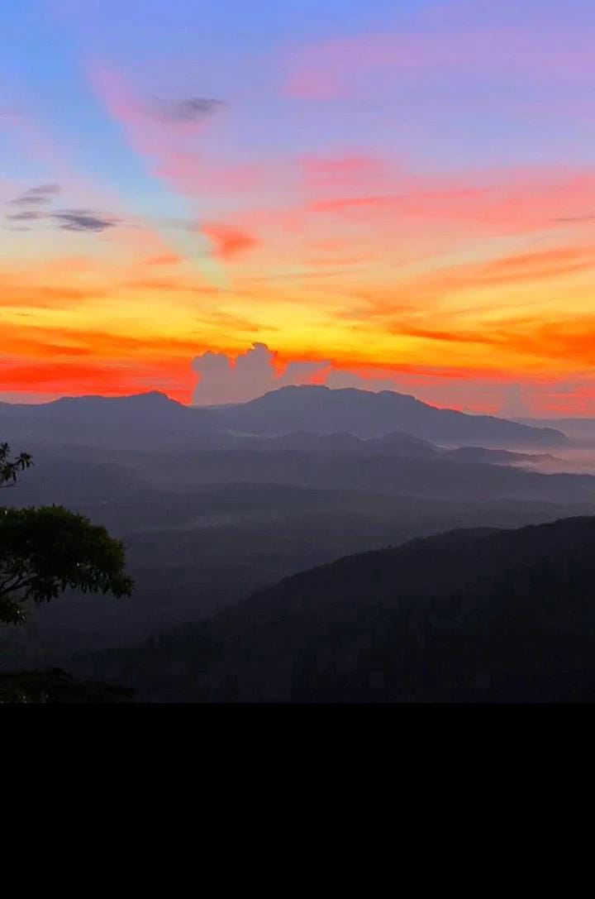
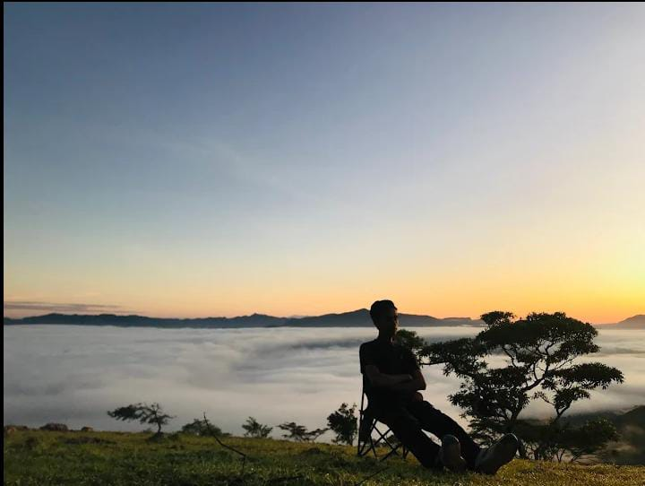
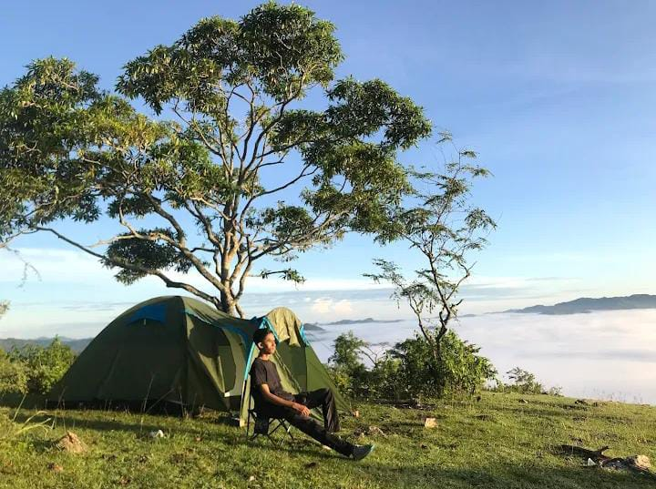

📍 Deskripsi Lokasi
Bukit Bikon, atau dikenal juga sebagai Bukit Bikekneno, merupakan destinasi wisata alam di Desa Bikekneno, Kecamatan Mollo Selatan, Kabupaten TTS. Tempat ini menawarkan keindahan lanskap hijau yang luas dan cocok untuk menikmati sunrise maupun sunset.
🌄 Keindahan & Suasana Alam
- Panorama perbukitan dan lembah, sangat ideal untuk fotografi alam.
- Udara sejuk dan suasana tenang, cocok untuk relaksasi dan healing alami.
👥 Profil Pengunjung
- Didominasi pecinta alam, keluarga, dan wisatawan lokal.
- Cocok untuk trekking ringan dan piknik sederhana.
💰 Tarif Masuk
Tiket Masuk: Belum ada tarif resmi.
- Pengunjung dianjurkan memberikan donasi sukarela.
- Belum tersedia informasi terkait biaya parkir atau pemandu.
🕒 Jam Operasional
Buka setiap hari pukul 06.00 – 18.00 WITA. Datang pagi sangat dianjurkan untuk menikmati udara segar dan pemandangan maksimal.
🅿 Fasilitas & Kapasitas
- Area parkir luas (±50m x 50m): kapasitas 100 motor, 20 mobil, dan 10 bus.
- Toilet umum, tempat ibadah, pusat informasi: belum tersedia.
- Warung makanan: tersedia satu unit dengan camilan ringan.
- Fasilitas difabel, evakuasi, dan asuransi: belum tersedia.
Sumber: Dokumentasi & Wawancara Warga Desa Bikekneno